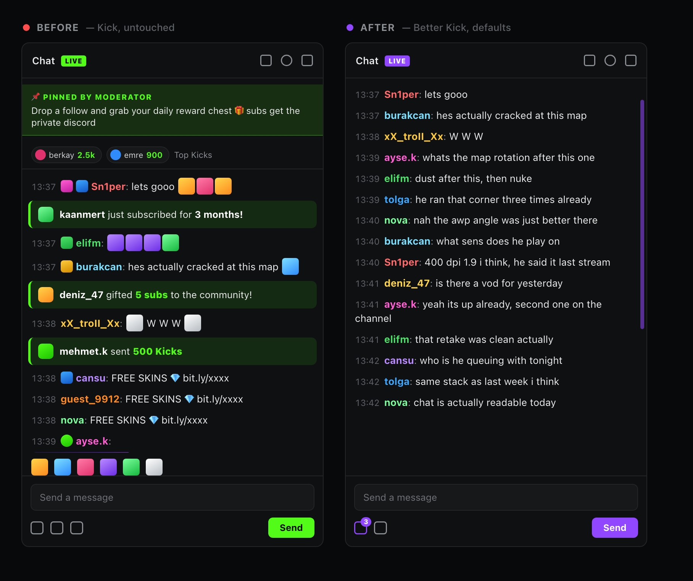

Better Kick
Kick.com chat, stripped down to username: text.

- Plain-text chat — emotes, emoji, badges, avatars, gifs, stickers and link previews all go.
- No sub spam — subscriptions, gift subs, Kicks, the top-gifter marquee, pinned banners and polls.
- Deleted-message log — every message a moderator removed, kept and readable.
- Copypasta filter — once a line has been posted ten times in ten minutes, later copies stop appearing.
- Purple theme — Kick's green becomes
#9147FF, wordmark and favicon included. - Locked to 1080p — the player holds quality across reloads, channel changes and stream restarts.